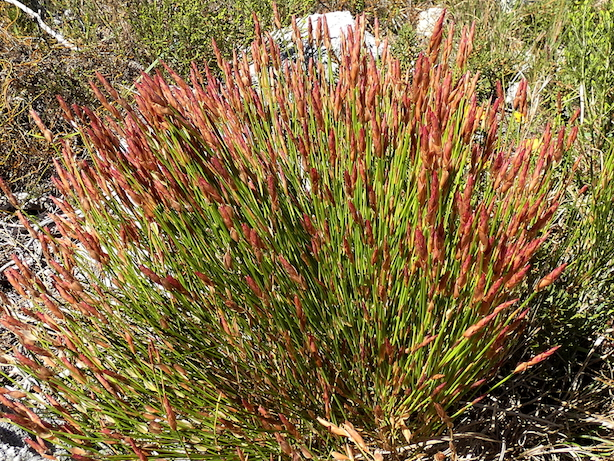
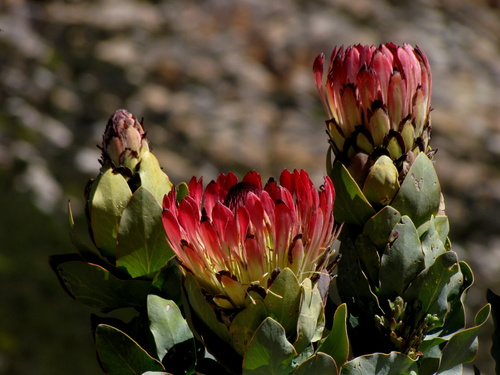
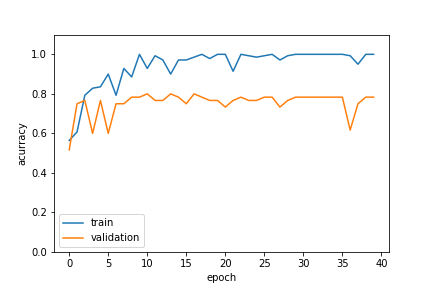
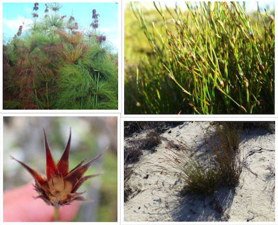
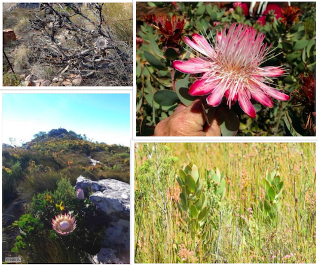
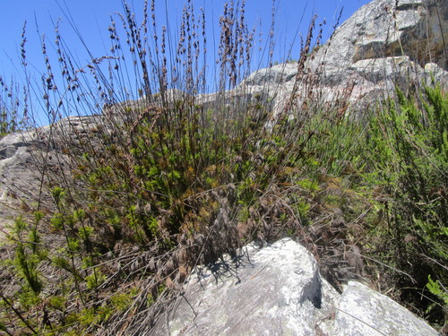
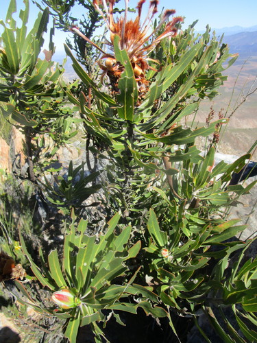
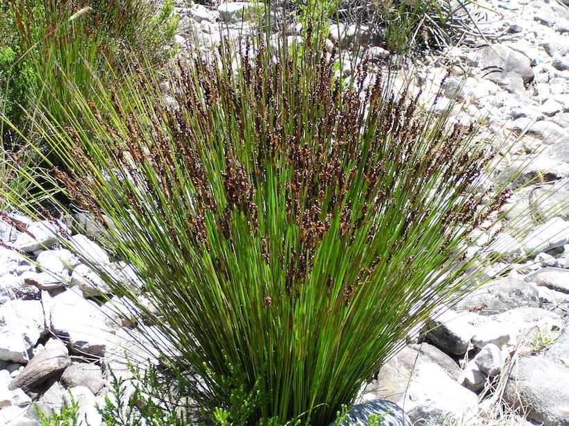

Automated fynbos identification using iNaturalist and deep learning
Identifying Proteas and Restios from photos using TensorFlow and transfer learning.
A lack of knowledge of neural networks has probably been one of the biggest gaps in my data science skillset. I decided to rectify this last year and did some online courses and reading to try get up to speed on simple neural networks, and more complex architecture such as Convolutional Neural Networks and Recurrent Neural Networks. I am really excited by the opportunities these new methods can offer ecology, and already have a number of cool projects fizzing in my brain.
Armed with a basic understanding of how these things work. I decided to have a go at my first real-world application. Any ecologist working in the wonderous fynbos biome can attest to my frustration at trying to identify which of the more than 9000 possible species of plants they are currently holding in their hand. I am particularly rubbish at this task, but I am less rubbish at data science. Therefore I came about this project of trying to compensate for my poor botany skills by building a Neural Network that can automatically identify fynbos plant species from photos.
Step 1: Getting the Data
Getting photos of plants with confirmed ID's can be a painstaking process. Luckily a vast collection of images of fynbos plants taken by amateur naturalists with confirmed ID's has recently become available on iNaturalist. The best thing about this amazing resource (if you are a data scientist), is that it provides comprehensive access to all it's data through a REST API. Even better is that there is a simple R package rinat through which the API can be called from R. For the beta version of my fynbos plant ID neural network I will just obtain photos of Proteas and Restios, two of the most common and iconic plant groups in the fynbos biome, and try to distinguish among these groups. In case you are totally unfamiliar with these plant groups
Here is a Restio (family Restionaceae):

Here is a Protea (genus Protea):

To download images of family Restionaceae and genus Protea within a bounding box of the fynbos biome:
#load rinit library
library(rinat)
setwd("~/science/image_net")
#rough bounding box for the fynbos biome
bounds <- c(-32.86,20,-34.3,24)
#call iNaturalist API
Proteas <- get_inat_obs(taxon_name = "Protea",bounds=bounds)
Restios <- get_inat_obs(taxon_name = "Restionaceae",bounds=bounds)
#download the images for each group to a local file
#restios
for (i in length(Restios$image_url):1){
download.file(url = Restios$image_url[i],destfile = paste0("~/science/image_net/Data/restio/restio_",Restios$id[i],".jpg"),method="libcurl")
}
#proteas
for (i in 1:length(Proteas$image_url)){
download.file(url = Proteas$image_url[i],destfile = paste0("~/science/image_net/Data/protea/protea_",i,".jpg"),method="libcurl")
}and just like that I have 100 images with confirmed identification for various Proteas and 100 images with confirmed identification for Restios. We could have more images, iNaturalist just limits us to 100 results per request.
Step 2: Train the Neural Network
I used a Convolutional Neural Network (CNN) to model the images. This type of Neural Network is commonly used for images analysis. This article on DataCamp give a great intro to CNN's. I also used transfer learning to build my model on top of a pre-trained CNN fitted to a large dataset of images. Transfer learning uses predefined network structures with fixed weights to improve the fit of models on small datasets. Learn more about transfer learning at DataCamp. The logic is that these pretrained models, designed by very smart people and fitted to giant datasets have 'learned' the simple structure of images and can already identify features such as edges and corners. These features are captured in the basal layers of the network, which we inherit. To obtain a good fit to our data all we then do is add a few layers on top of the pretrained network that use the features it already knows to match our classes.
The dataset of 200 images of Proteas and Restios is not a particularly large dataset on which to train a CNN. To address this I used a technique called 'image augmentation'. Essentially what this does is perform a series of transformations to our image dataset such as flipping, shifting, rescaling, zooming etc. to create new images which we can add to our dataset. I am not going to give you the full details here. You can read the tutorial on how to do this by François Chollet on the Keras Blog, you can also find the full code that I used for model fitting on my GitHub. Model fitting was done using Keras 2.0 with tensorflow backend in Python 2.7

After fine tuning these results a bit more the final model gives us about 80% accuracy. This is not exceptional - it is not going to replace a botanist just yet. But when you take a look at how diverse the images it is trying to identify are:


it is actually quite impressive. If we had a little standardization in the way we photographed the plants I think we could be getting 95% plus. An interesting side thought would be to train the classifier separately for images of flowers and images of vegetative plant material. "But how would we label images as flowers or vegetative?" you may ask. With a Neural Network of course.
Step 3: Predict new images
Finally, now that we have a trained model saved we can write a simple Python script that will load the model, and classify it as 'Protea' or 'Restio' given an image file.
#!/usr/bin/python
import sys
import warnings
warnings.filterwarnings("ignore")
from keras.models import load_model
from keras.models import Sequential
import cv2
import numpy as np
#load saved model
model = load_model('proteas_final.h5')
photo = str(sys.argv[1])
#resize and classify image
def fynbos_id(model, photo):
img = cv2.imread(photo).astype(np.float32) / 255
img = cv2.resize(img, (150, 150))
img = np.expand_dims(img, axis=0)
classes = model.predict(img)
if classes <0.5:
sp_id = "Protea"
else:
sp_id = "Restio"
return sp_id;
#print result
print(fynbos_id(model,photo))Lets try with a few new images not in either the training or validation set:

python proteas_predict_single.py test_01.jpgreturns.... Restio
Yay!

python proteas_predict_single.py test_02.jpgreturns.... Protea
Yay!

python proteas_predict_single.py test_03.jpgreturns.... Protea
Hmmm
so it's not perfect, but not bad for a start. We need to add more images to the training and validation set to improve this model and maybe be more careful with the types of images we use to train with. But overall I think I have succeeded in this proof of concept. In the final stage of this workflow I will serve this model through a REST API using Python flask hosted on AWS. Look out for this in my next blog post.